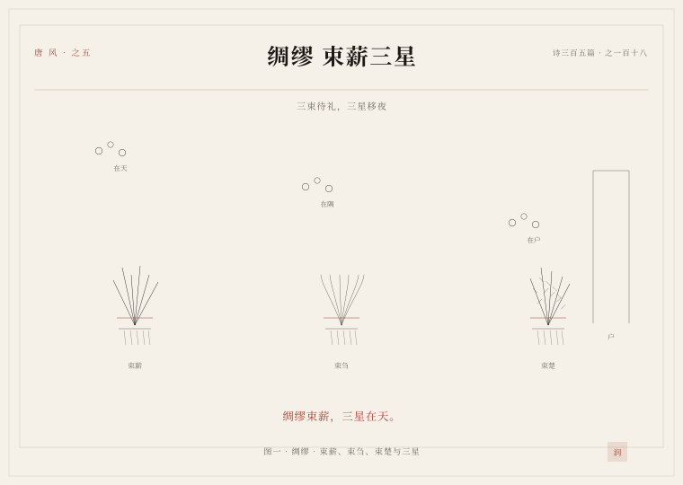
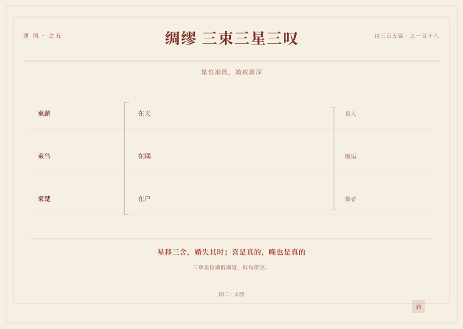

第一百十八篇 绸缪
唐风 · 之五 SJ118
朗读 · 普通话
依经文原文朗读，章次不读出；配古琴底乐，不改速、不加拖腔。全库同一音色（豆包 TTS），非播音员录制。
一 解题
诗三判：
- 谁在说：晋国亲见婚姻失时之人。或为失时成婚者自叹，或为贤者指斥娶者；毛郑主刺乱，朱子以为夫妇相语、喜而自庆之词。两说并存。
- 说什么事：三章只换「薪／刍／楚」「天／隅／户」「良人／邂逅／粲者」。束薪束刍束楚以待礼，三星由天而隅而户，夜已渐深；今夕何夕，始见此人。
- 为何编在此：117 写沃之宗支蕃衍，118
写晋国内乱而婚姻失时；国乱则家礼先坏，先写宗支之偏，再写人伦之晚。
《毛序》：「《绸缪》，刺晋乱也。国乱则婚姻不得其时焉。」
朱子《诗集传》：「兴也。绸缪，犹缠绵也。三星，心也。在天，昏始见于东方，建辰之月也。良人，夫称也。○国乱民贫，男女有失其时，而后得遂其婚姻之礼者。诗人叙其妇语夫之词曰：方绸缪以束薪也，而仰见三星之在天。今夕不知其何夕也，而忽见良人之在此。既又自谓曰：子兮子兮，其将奈此良人何哉。喜之甚而自庆之词也。」
本库的看法：《绸缪》是一首把「晚」藏在「喜」里的诗。
束薪、束刍、束楚，是昏礼备薪之常事；三星三移，见夜之已晚。「今夕何夕」似惊喜，「如此良人何」实无可奈何。
毛郑以失时为刺，朱子以喜庆为言；本库取「喜中含叹」：喜其终得相见，叹其已失正时。断语：星移三舍，婚失其时；喜是真的，晚也是真的。
先辨五事：「绸缪」是束缠之貌，不是绸子；「三星」是星名（毛谓参，郑谓心），不是三颗星泛称；「良人」可为夫称，亦可为美室，传笺已异；「邂逅」是不期而遇，不是现代的约会；「粲者」是美者，一说三女为粲。
二 经文
第一章
绸缪束薪，三星在天。
今夕何夕，见此良人。
子兮子兮，如此良人何！
第二章
绸缪束刍，三星在隅。
今夕何夕，见此邂逅。
子兮子兮，如此邂逅何！
第三章
绸缪束楚，三星在户。
今夕何夕，见此粲者。
子兮子兮，如此粲者何！
分章：三章，章六句。
三 韵读
- 一章：薪、天、人、人，真部；「人」收，良人落定。
- 二章：刍、隅、逅、逅，侯部；「逅」收，相遇之事收住。
- 三章：楚、户、者、者，鱼部；「者」收，美者终篇。
- 朱子叶音：天，叶铁因反；刍，叶侧九反；隅，叶语口反；逅，叶狼口反；者，叶章与反。本库韵部依古音，叶音仅记朱子读法，不改经文。
读法：三章由「天」而「隅」而「户」，星位渐低渐近；物换薪刍楚，星移天隅户，夜一层深一层。
四 字义与名物
- 绸缪：犹缠绵，束缠紧缚之貌（毛传）。
- 薪、刍、楚：薪，柴；刍，刈草，束草；楚，荆条。皆昏礼束柴薪以燎、以送之常物。
- 三星：毛传「参也」，参宿三星；郑笺「心星也」，心宿三星，有尊卑夫妇父子之象，为嫁娶之候。二说并存，详见存疑。
- 在天／在隅／在户：在天，始见东方；在隅，东南隅；在户，星斜直室户。皆记昏夜星位之移。
- 良人：毛传「美室也」；朱传「夫称也」。传笺主女称夫、毛传以为美室，两训并存。
- 邂逅：毛传「解说之貌」；《韩诗》「不固之貌」；朱传「相遇之意」。今从不期而遇。
- 粲者：朱传「美也」；毛传「三女为粲，大夫一妻二妾」。一为美者之通称，一为众女之称，详见存疑。
- 子兮：毛传「嗟兹也」，嗟叹之辞；郑笺以为斥娶者。
- 如此……何：犹「奈……何」，无奈之叹。
名物：薪刍楚，皆可束之物，干者为薪，草者为刍，荆条为楚；三星为昏夜观候之星，非灯火。
五 今译
紧紧捆扎一束柴薪，三星正悬在天边。今夜是什么夜啊，得见这位良人。你呀你呀，可拿这位良人怎么办！
紧紧捆扎一束草刍，三星斜在东南隅。今夜是什么夜啊，得见这不期而遇的人。你呀你呀，可拿这次相遇怎么办！
紧紧捆扎一束荆楚，三星直照到门户。今夜是什么夜啊，得见这位美人。你呀你呀，可拿这位美人怎么办！
六 章旨
- 一章：写「在天」与「良人」。星始见东方，婚时已晚；初见良人，喜中已含叹。
- 二章：写「在隅」与「邂逅」。星移东南隅，夜又深一层；相遇本不期，失时之责在礼不在人。
- 三章：写「在户」与「粲者」。星直户庭，夜已分半；美者在前，叹「如此粲者何」收束全篇。
- 总收：三束三星三叹，夜愈深而婚愈晚；「今夕何夕」不是庆贺，是说不清这一夜是早是晚。
七 诗教
- 兴：以束薪起兴，薪刍待人束而成用，室家待礼而成家；兴到三星在天，昏夜之候自见。
- 观：观国乱如何先坏昏礼。正时已失，男女辗转后时；一首情诗背后，是一国民俗之晚。
- 群：诗中「子兮」呼告，似自嗟，似责人；同声一叹里，是失时者相与怜悯之心。
- 怨：怨在「如此良人何」一奈。不直斥乱政，只把无可奈何留给收句；怨而不怒。
八 分寸与边界
- 不可把《绸缪》读作单纯的新婚祝歌。毛序刺晋乱、婚姻失时；一读纯贺喜，失时之叹便全被抹去。
- 不可把「三星」解成天上随便三颗星。它是参或心的特定星宿，为嫁娶观候；泛读三星，天象的候时之义就落空。
- 不可把「邂逅」当作现代恋爱约会的词。古义是不期而遇、解说之貌；一读约会，诗就成了后世风情。
- 不可把「粲者」坐实成一妻二妾。毛传备此一说，朱传从美者通称；图与说不画妾媵之制。
- 不可把三章星位排成同一位置。天、隅、户是渐低渐近的推移；三章星位若同，「夜久」一层就看不出来。
九 存疑
- 诗旨与说话人：毛序「刺晋乱，婚姻不得其时」，郑笺斥娶者后于仲春；朱子以为「喜之甚而自庆之词」，妇语夫、夫妇相语、夫语妇，章次口吻亦有出入。本库取喜中含叹，不主一端。
- 三星：毛传谓参宿，郑笺谓心宿；昏月推算毛郑各异（毛主秋冬正时，郑主失仲春之月）。星名与月候，旧说并存不硬断。
- 「良人」：毛传美室，朱传夫称；称谓男女所指相反，经文两训并存。
- 「邂逅」：毛传解说之貌，《韩诗》不固之貌，朱传相遇之意；貌、遇二义，所指不同。
- 「粲」：朱传美也，毛传三女为粲、大夫一妻二妾；通称与众女之称，名物制度存参。
十 跨典
- 《周礼·地官·媒氏》：「仲春之月，令会男女。」——婚姻正时之制；此诗所刺，正是失此仲春之期。
- 《礼记·昏义》：「昏礼者，将合二姓之好，上以事宗庙，而下以继后世也。」——昏礼之重；失时之婚，所损不止一室之好。
- 《诗经·郑风·溱洧》：士女秉兰赠勺药，相遇以时；彼写及时之会，此写失时之遇，对照可读。
- 《诗经·唐风·葛生》：「葛生蒙楚，蔹蔓于野。」——同卷后世悼亡之思；先有婚姻失时之叹，后有室家离散之悲。
- 《左传·庄公二十七年》：「男女非有行媒，不相知名。」——礼以媒合；诗中束薪待礼，正与媒氏之制相发。
十一 双卡与图
六对双卡：
| 绸缪（束缠之貌） |
绸缪（绸子） |
| 三星（参／心宿） |
三星（泛称三颗星） |
| 良人（夫称／美室） |
良人（好人泛称） |
| 邂逅（不期而遇） |
邂逅（现代约会） |
| 粲者（美者／三女） |
粲者（灿烂的人） |
| 天·隅·户（星位推移） |
天·隅·户（三个地点） |

图一 · 绸缪 束薪、三星、在天在隅在户

图二 · 绸缪 三束三星三叹
读图三处：
- 三束并立：薪、刍、楚各一束，束腰两道，缕根接在束身内；不画捆柴的人。
- 三星三移：星位自左上天边，移向东南隅，再斜近门户；三章星位不画成同一高度。
- 叹句留空：图二末行「如此粲者何」不加点破，右格虚落；叹处留空，喜与晚才都站得住。